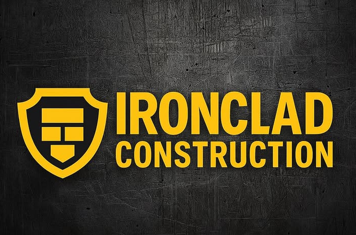
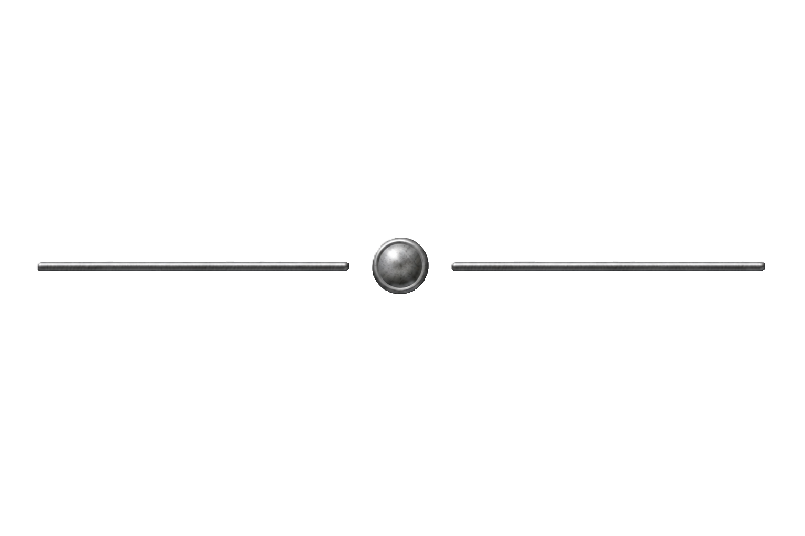
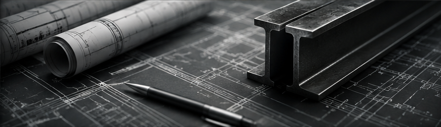
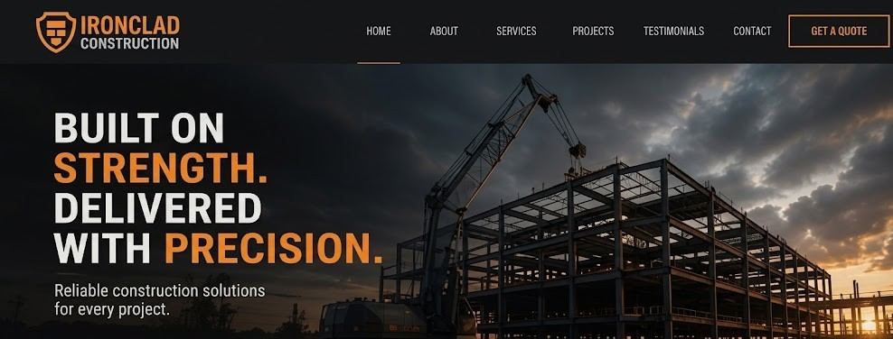
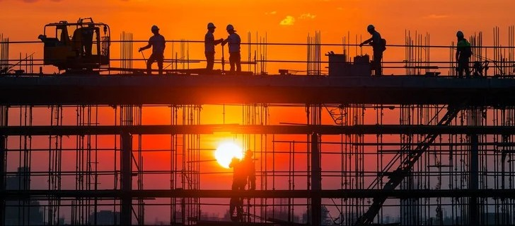

Ironclad Construction approached Visual Foundry with the goal of modernising its brand and establishing a stronger online presence. Through strategic planning, an industrial-inspired design, and user-focused development, Visual Foundry created a website that effectively showcased the company's expertise and completed projects. The finished product improved credibility, increased engagement, and provided a solid foundation for future growth. Click the button below to explore the completed website and see the final result in action.

The Challenge
Outdated branding and a lack of online presence made it difficult to build trust and attract high-quality clients. Previously existing only as a Facebook business page, their online presence did not reflect the scale nor professionalism of their business.
The Process
We followed a strategic process of planning, design, and development to create a strong foundation for a successful website. This included researching industry competitors, defining the user experience, and establishing a cohesive visual direction for the website.
The Solution
Visual Foundry delivered a bold, modern website that showcased Ironclad's work, built credibility, and converted visitors into loyal clients. The design focused on clarity, strong visual hierarchy, and a confident industrial aesthetic to reinforce trust.
The Results
Increased visibility, stronger brand trust, and a significant boost in inquiries and project opportunities. The new digital presence positioned the company as a professional and reliable player within the construction sector.


